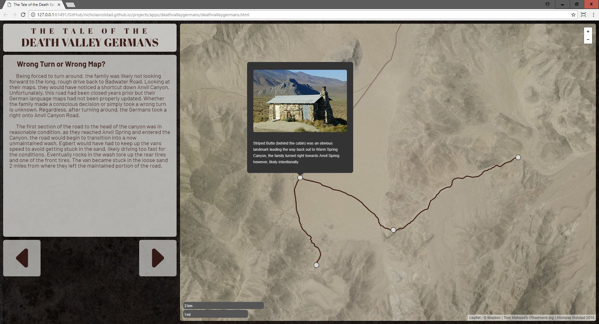

Death Valley Germans
This is a project based on the conclusions of Tom Mahood's search for a family that disappeared in Death Valley. There is a static version and an interactive version. For the static version, DEM/Landcover data was edited in ArcMap and further manipulated in Adobe Photoshop in order to create a realistic hillshade-terrain basemap. The final cartographic design was created in Adobe Illustrator. The interactive version was created with JavaScript using the Leaflet.js library and a custom designed MapBox basemap.

Click the screenshot to open the interactive version
